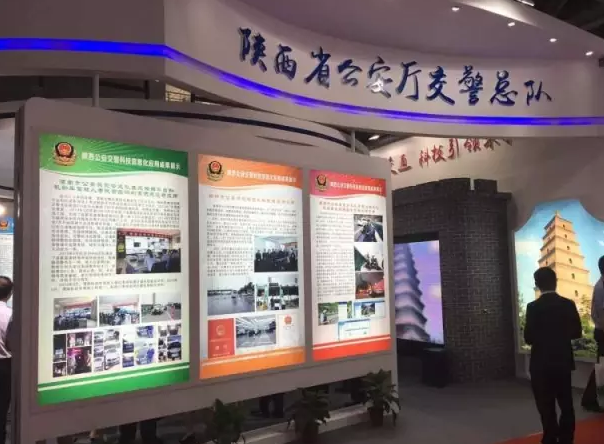
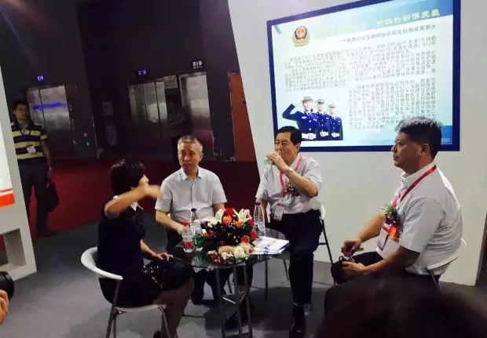
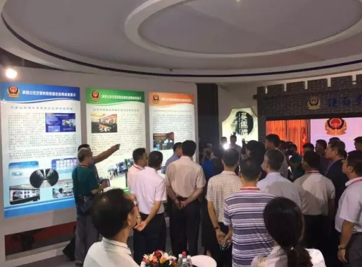

第八届中国国际道路交通安全产品博览会于8月29日在羊城广州隆重开幕，“优驾行”作为陕西交警信息化改革创新的成果在本届博览会上亮相。
以“一带一路，交通先行”为主题的第八届中国国际道路交通安全产品博览会于8月29日至31日在广州琶洲保利世贸博览馆隆重开幕。大会经中华人民共和国公安部、商务部批准，由公安部交通管理局、装备财务局、科技信息化局、公安部交通管理科学研究所和广东省公安厅交通管理局支持，中国道路交通安全协会主办。
在为期三天的展会上，有来自全国各地的交警系统和国内外知名企业参加了本届博览会。作为陕西省公安交警科技信息化应用的丰硕成果，“优驾行”平台在本届博览会上乍一亮相，就引起了与会单位和人员的极大关注。
 近年来，我省机动车及驾驶员数量迅速增长，对于公安交管部门的服务能力提出了越来越高的要求。随着国家“互联网+”战略的不断深化，信息技术和大数据的应用，“优驾行”作为结合公安交管服务的管理创新、服务模式创新的有力手段应运而生。
“优驾行”的诞生解决了驾驶人离开违章地后得知发生非现场违章（电子摄像、违章停车）却难以处理的问题，能够裁决有记分违法记录的24 ×7交警业务办理渠道，使交警业务办理不再受工作日限制，群众随时可办理，使用互联网技术，不受地域限制，群众更可随地办理，大大减轻交警业务窗口压力，减少驾驶员往返奔波、排队。
同时，实现了智慧交通与移动网络技术服务的完美结合，解决了群众迫切需要通过互联网完成交通违法与处理功能的需求，大大提高了交通管理各项业务工作中科技手段的有力使用和交管部门管理水平的大力提升。